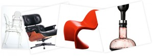

Informacje o sklepie:
– Profil sklepu: oryginalne meble i dodatki dla domu, biura, ogrodu
– Profil klienta: osoby i instytucje stawiające na najwyższą jakość i wzornictwo
– Czy firma prowadzi również handel tradycyjny? Tak, sklep działa od 2008 roku
– Data startu: sklep w Internecie ruszył we wrześniu 2011
ATAK DESIGN to salon sprzedaży, galeria sztuki użytkowej, usługi projektowania wnętrz. Skąd pomysł na otworzenie także sklepu internetowego?
Decyzja o utworzeniu sklepu w Internecie była wypadkową wielu czynników. Przede wszystkim naszym celem było dostosowanie oferty do oczekiwań klientów, którzy coraz częściej i chętniej odwiedzali naszą ? bardzo jeszcze wtedy statyczną ? stronę. Dzięki temu, że oferujemy wyłącznie oryginalne produkty wysokiej jakości otrzymywaliśmy bardzo dużo zamówień czy to w formie e-maila, czy zapytań telefonicznych. Był to dla nas wyraźny sygnał, że nasi klienci są gotowi, by dokonywać zakupów zdalnie ? przez Internet. Sklep internetowy jest również doskonałym narzędziem wspierającym tradycyjną sprzedaż w naszym salonie ? oprócz informacji z katalogów i folderów nasi klienci mogą teraz czerpać wiedzę i inspirację ze stron sklepu.
Wybrali Państwo gotowe rozwiązanie sklepu internetowego. Jakimi kryteriami się Państwo kierowali i na co zwrócili szczególną uwagę przy wyborze takiej platformy?
Przede wszystkim istotna była decyzja o wyborze gotowego rozwiązania. W trakcie przygotowywania założeń dla projektu uznaliśmy, że kosztu zaprojektowania i stworzenia, a później utrzymania i rozwoju dedykowanej aplikacji nie da się w żaden sposób uzasadnić ewentualnymi korzyściami płynącymi z takiego podejścia. Wybierając zaś spośród gotowych rozwiązań braliśmy pod uwagę bardzo wiele czynników. Wymienię te najistotniejsze:
– ciągły rozwój aplikacji gwarantujący nadążanie za zmianami w prawie i ekonomii
– wsparcie (nie tylko zaraz po zakupie) oferowane w języku polskim
– relatywnie duży zakres dopuszczalnych modyfikacji
– łatwość wprowadzania zmian prowadzących do gruntownej zmiany wyglądu sklepu
– bogata dokumentacja systemu, zwłaszcza po stronie technicznej (interface?y, integracje, przykłady)
– niski koszt zakupu i wsparcia
Dodam, że przed podjęciem decyzji wykorzystaliśmy darmowy okres próbny, w czasie którego sprawdzaliśmy takie parametry jak szybkość działania systemu, jakość generowanego kodu HTML pod względem kompatybilności z przeglądarkami i możliwościami w zakresie SEO. Nie bez znaczenia było dla nas także to, że Shoper pozwala na łatwą integracje z systemami zewnętrznymi.
Kategoria ?dom i wnętrze? jest jedną z najpopularniejszych w polskim e-commerce, jednak odnaleźli Państwo swoją niszę oferując produkty nietuzinkowe i ekskluzywne. Jak wygląda profil Państwa klienta, czy w ogóle w Polsce jest zapotrzebowanie na tego typu asortyment?
Nasi klienci to osoby, które tworząc swoją przestrzeń ? czy to w domu czy w biurze ? dbają o najwyższy poziom wzornictwa i wykonania użytych mebli, oświetlenia i dodatków. Ludzie, którzy na przekór zmieniającym się modom, powodującym, że każdy zakup starzeje się tak szybko, że natychmiast staje się kosztem, wybierają ponadczasowe meble, które dzięki swojemu designowi i jakości opierają się biegowi lat i śmiało mogą być uznane za swego rodzaju inwestycję! Większość oferowanych przez nas projektów jest nawet dziś postrzegana jako dzieła odważne i nowoczesne pomimo tego, że zostały stworzone ponad pół wieku temu. Ba, istnieje całkiem spory rynek na używane meble klasyczne. Bardzo nas cieszy, że z roku na rok przybywa ludzi, którzy czerpią radość z przebywania w przestrzeniach wypełnionych pięknymi i funkcjonalnymi meblami. Wierzymy, że to dopiero początek, a rosnące zainteresowanie naszą ofertą i sklepem utwierdza nas w tym przekonaniu.

Państwa sklep wygląda imponująco. Ponad 90 marek, 300 projektantów, ponad 10 000 produktów, które można wygodnie wyszukać według podziału na różne kategorie. Jednak kluczową sprawą dla e-sklepów jest także obsługa klienta. Jakie rozwiązania stosują Państwo na tym polu?
Oferowane przez nas meble w większości przypadków są wykonywane bądź kompletowane przez producenta pod konkretne zamówienie, dzięki czemu klienci mają bardzo duże możliwości wyboru czy to kolorów czy rodzaju wykończenia. Takiego procesu nie da się przeprowadzić bez dobrej interakcji pomiędzy klientem a sprzedawcą. Dotyczy to w takim samym stopniu każdego kanału sprzedaży, w tym także sklepu internetowego. W przypadku zamówień płynących z tego źródła naturalnym medium komunikacyjnym jest email, ale oczywiście nie ograniczamy się do niego zostawiając klientowi wybór najlepszej drogi kontaktu z nami.
Rozumiem, że większość produktów sprowadzają Państwo z zagranicy, jak więc wygląda czas realizacji zamówienia? Jak zostały także rozwiązane kwestie dostawy produktów o większych gabarytach oraz tych wymagających montażu?
W przypadku produktów sprowadzanych na zamówienie, a takie rzeczywiście są grupą dominującą, jesteśmy całkowicie uzależnieni od warunków narzucanych przez producentów. Czas dostawy zwykle zawiera się pomiędzy dwoma, a czterema tygodniami, czasem tylko dochodzi do sześciu. Są to dokładnie takie same warunki, jakie możemy zaoferować w sklepie stacjonarnym. Meble to w dużej części przesyłki wielkogabarytowe i dość delikatne. Współpracujemy ze sprawdzonymi kurierami i oferujemy transport własny. Zawsze, kiedy wymagany jest specjalistyczny montaż towar jest dostarczany przez naszego pracownika, który na miejscu montuje, np. meble USM.
Jakie cele postawiliście Państwo przed e-sklepem?
Nasz sklep internetowy od samego początku był projektowany jako bardzo istotny element istniejącego przedsięwzięcia, a nie jako dodatkowy, autonomiczny i samowystarczalny kanał sprzedaży. Innymi słowy staraliśmy się zbudować rozwiązanie wzbogacające naszą ofertę o źródło łatwodostępnej, czytelnej i zawsze aktualnej informacji o produktach, narzędzie promocji w Internecie, nowy, wygodny sposób zamawiania i kupowania. Ponieważ dotychczasowa forma działalności zapewniała już dotarcie do klientów w całym kraju sklep internetowy nie przyniósł znaczącej rewolucji w tym zakresie ? zmienił (czytaj ? zdecydowanie ułatwił i poprawił) jedynie sposób kontaktu z klientami. Ścisła integracja nowego kanału sprzedaży być może powoduje trudność w ocenie jego rentowności i sukcesów sprzedażowych, ale nie stanowi to dla nas jakiegokolwiek problemu. Zdecydowanym priorytetem jest sprawne działanie biznesu jako całości.
Z jakich kanałów i form promocji korzystają Państwo przy reklamowaniu własnego e-sklepu?
Oferujemy produkty, które swoją popularność zawdzięczają jakości i ponadczasowemu wzornictwu. Jest to dla nas zarówno ułatwienie jak i wzór do naśladowania. Staramy się zdobywać uznanie naszych klientów i popularność w sieci poprzez oferowanie treści o najwyższej jakości, materiałów o wysokiej wartości dla odbiorców. Współpracujemy z gazetami i portalami, które podzielają nasze spojrzenie na współczesny design, bierzemy udział w wydarzeniach kulturalnych związanych z wzornictwem i sztuką użytkową. W sieci nie ulegamy pokusie zdobywania pierwszych miejsc w wyszukiwarkach za wszelką cenę ? osiągamy je, być może wolniej, ale w sposób bardziej stabilny, poprzez budowanie serwisu z bogatą treścią.
To co Pan mówi o pozycjonowaniu to bardzo cenna i trafna uwaga, którą do serca powinni wziąć sobie wszyscy właściciele sklepów i witryn internetowych. Życzymy samych sukcesów i dziękujemy za wywiad.

{kind=link}
{kind=link}
{kind=link}
{kind=link}
{kind=link}
{kind=link}
{kind=link}
{kind=link}
{kind=link}
{kind=link}